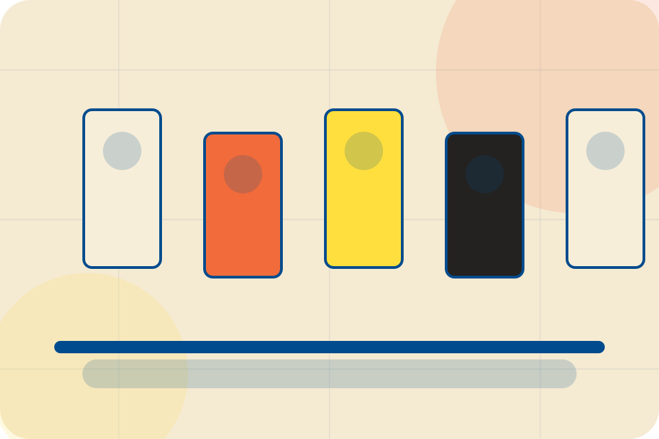

ASH-TRA static portfolio support
Terms of Use
This static portfolio site demonstrates a premium ASH-TRA build for Food Production, Packaged Goods & Consumer Foods. Content is informational and must be reviewed by the final client for legal, operational, pricing, and regulatory accuracy before publication.
Ingredient, allergen, and storage information must match the final product label and local requirements.
Visitors should treat pricing, availability, service descriptions, credentials, and policy language as demonstration material until the final business owner approves live terms.